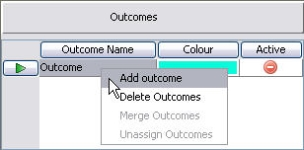
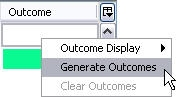

Assign an outcome to a leaf node
In order for a tree to be deployed all the leaf nodes must have an outcome assigned to them. An outcome can be assigned to one or more leaf nodes. Leaf nodes assigned the same outcome will have the same action/treatment applied to them. In a segmentation tree you can have unassigned outcomes. In the outcomes area these are displayed with the following icon.
The user can determine how the outcomes are displayed in the tree by right clicking on an outcome in the tree and selecting Outcome Display followed by Text, Colour or Mixed.
| Text - will display only the names of the outcome assigned to the leaf node Colour - will display only the colour of the outcome assigned to the leaf node Mixed - will display both the colour of the cell and the outcome name assigned to it |
Outcomes are assigned to the leaf nodes of a tree. Leaf nodes assigned the same outcome will have the same action/treatment applied to them.
To create an outcome for a tree
- With the Segmentation Tree editor open, right click in the Outcomes area and select Add Outcomes.

An outcome will be created with a new colour and a default name. - Replace the default name with a new unique name for the outcome.
- Double click on the outcome colour to change an outcome colour (if desired) and select a new colour from the Pick a Colour screen.
- Repeat for all the outcomes required.
You will now have the outcomes you require for the tree.
Once all the leaf nodes that need to have a description given to them have been completed, the user can use the Generate Outcomes option to automatically generate outcomes for the Outcomes area. The system will use the leaf node names that have been defined as the outcome names.
To auto generate an outcome name
- With the Segmentation Tree editor open right click underneath the Outcome column in the segmentation tree editor and select Generate Outcomes.

- The outcome names and colours will be automatically generated using the descriptions you have provided (in the Leaf Node Name column of the segmentation tree editor). These will be added to the Outcomes area and assigned to the leaf nodes of the tree.
Those leaf nodes that have not had a description assigned to them will remain <<Unassigned>>.
The original outcome name that was created when the tree was created will not be assigned to any leaf node. The following icon in the Outcomes area will indicate that this outcome name is inactive.
Outcomes are colour coded. A leaf node in the segmentation tree is coloured according to the outcome assigned to it making it easier to view and identify leaf nodes that have been assigned the same outcome. The colours are selected from a palette of colours. A default colour is used when first defining the outcomes. It is possible for the user to change the colour for an outcome at any time. The system will not allow the user to assign the same colour to more than one outcome.
To change the colour of an outcome
- In the Outcome area double click on the outcome colour you wish to change.
A palette of colours will be displayed in the Pick a Colour screen. - Select the required colour from the palette and click on the OK button.
The outcome colour will be changed to the new colour.
Any leaf nodes that have already been assigned the outcome will change to the new colour.
Two or more outcomes can be merged together to form one outcome in the Outcomes area of the segmentation tree.
To merge an outcome
- In the Outcomes area select the outcomes you wish to merge, with your cursor over the outcome you want to keep, right click and select Merge Outcomes.
- In the Merge outcomes dialog, click on the OK button to confirm the merge.
The outcomes will be merged; all leaf nodes will be updated.
The user can unassign an outcome from within the Outcomes area. When an outcome that has been assigned to a leaf node is unassigned, <<Unassigned>> will be displayed next to the leaf node, and the leaf node will be displayed with the following icon.
The outcome in the Outcomes area will be displayed as inactive.
To unassign an outcome in the Outcomes area
- In the Outcomes area of the segmentation tree editor, right click on an Outcome Name that has been assigned to some leaf nodes and select Unassign outcomes.
The Outcomes area will be updated and the leaf nodes will be updated with <<Unassigned>>.
Outcomes can be deleted from the Outcomes area of the segmentation tree. If an outcome that is assigned to a leaf node is deleted, the leaf node will have the outcome removed and <<Unassigned>> displayed in its place.
To delete an outcome
- In the Outcomes area right click on the outcome you wish to delete and select Delete Outcomes.
- In the Delete outcomes dialog, click on the OK button to confirm deletion.
The outcome will be deleted from the list. Any leaf nodes already assigned the outcome will be reassigned with <<Unassigned>>, the leaf node will be displayed with the following icon.
All leaf nodes must have an outcome assigned to them. An outcome can be assigned to one or more leaf node.
To assign an outcome to a single leaf node
- With the Segmentation Tree editor open and in the Outcomes area, click on the outcome you wish to assign.
The Assign outcome button on the tool bar will automatically become activated.
on the tool bar will automatically become activated.

{kind=link}
{kind=link}
| You must already have created the outcome(s) and the leaf nodes to which they are to be assigned. |
- In the Segmentation Tree editor click on the outcome(s) of the leaf node that you wish to assign the outcome(s). The same outcome(s) will be assigned to any leaf nodes you select until you select another outcome in the Outcomes area.
- Repeat as necessary to assign an outcome to all of the leaf nodes.
- Select how the colour and text is to be displayed by right clicking on any outcome name in the segmentation tree editor and selecting Outcome Display followed by Text, Colour or Mixed.
Each outcome should now have an outcome assigned. Those leaf nodes that have not had an outcome assigned will have <<Unassigned>> displayed in the Outcome column and the following blue question mark icon displayed on the leaf node itself.
In addition to being able to assign an outcome to individual leaf nodes it is possible to assign the same outcome to all the leaf nodes of a tree or all the unassigned leaf nodes.
To assign an outcome to multiple leaf nodes
- With the Segmentation Tree editor open and in the Outcome table click on the outcome you wish to assign.
The assign outcome button on the tool bar will automatically become activated. - Click underneath the Outcome column in the Segmentation Tree editor.
The system will display the following dialog box.
{kind=link}
| To overwrite the outcomes click on the split header row underneath the Outcome column. This will update the outcomes in the sub tree below the selected split header. |
- Select All to overwrite all the outcomes in the segmentation tree with the new colour.
- Select Unassigned only to assign the new colour to those leaf nodes in the tree that are currently <<Unassigned>>.
The outcomes of the tree will be updated.
The user can clear outcomes that have been assigned to leaf nodes.
To clear an outcome from a leaf node
- With the Segmentation Tree editor open, right click on the outcome and select Clear Outcomes or select the Clear Outcomes icon from the tool bar and click on the outcome you wish to clear.
{kind=link}
The outcome will be removed from the leaf node and the outcome will be reassigned with <<Unassigned>>. The leaf node will be displayed with the following icon.